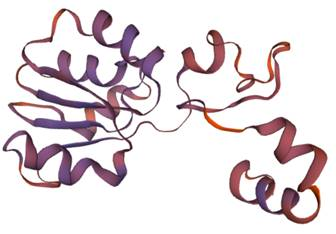
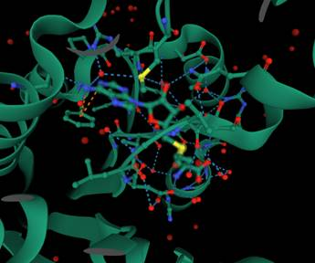
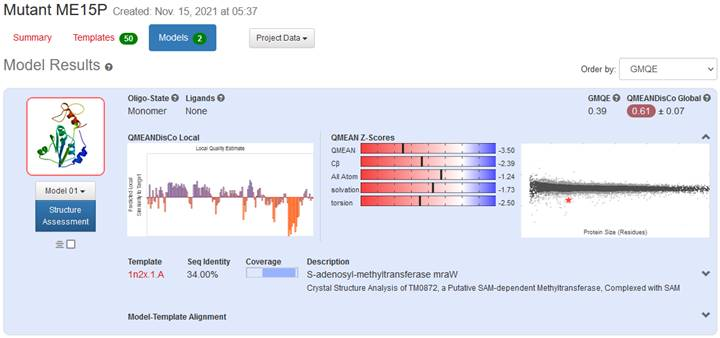

Rafael Villasmil BINF731 Fall 2021
Assignment 2. Protein modeling.
A. Select a sequence of a human enzyme, without known structure, from one of the protein sequence databases that has a homolog in PDB with at least 30%, but not more than 60% of sequence identity. (Recommended length of the selected sequence is 150-250 residues). Explain thought process
I am selecting Putative -like protein 15P1 (UniPort P0C7V9), a suspected methyltransferase, and highlighted it in green in Table 1. Methyltransferases are a class of enzymes that catalyze the transfer of a methyl group. The basic methyl transfer reaction is the catalytic attack of a nucleophile (carbon, oxygen, nitrogen, or sulfur) on a methyl group to form methylated derivatives of proteins, lipids, polysaccharides, nucleic acids, and various small molecules. Such methyl conjugation is an important pathway in the metabolism of many drugs and xenobiotic compounds, in addition to endogenous neurotransmitters and hormones; methylation is fundamental to the control of gene transcription.[1] The most common class of methyltransferases is class I, all of which contain a Rossmann fold for binding S-Adenosyl methionine (SAM).[2] I hope to find a Rossman fold and SAM substrate binding sites to used them as a point of referenctec when evaluating the models of the protein.
My search method was as follows
Figure 1 Schematic representation of a 2′-O-methyltrasnferase as a general example[3]
a. Searched NCBI (https://www.ncbi.nlm.nih.gov/protein/) with the terms bellow.
i. ("homo sapiens"[Organism]) AND "enzyme") not"Isoform".
This led to thousands to hits of proteins with known structures.
b. Searcher Uniprot.org with the terms bellow.
i. NOT database:(type:pdb) length:[150 TO 250] existence:"Uncertain [5]" ec:* AND organism:"Homo sapiens (Human) [9606]"
ii. PBD sequence search E-value cutoff 0.1 and Identity Cutoff 30%
iii. Calculated the percentage of sequence Identity with the NCBI Protein Blast
Table 1 Evaluation of Candidate Sequences
|
UniProt[4] |
PDB[5] |
NCBI Protein Blast[6] |
|||||||||
|
Entry |
Gene names |
Protein names |
Length |
Highest Score Entity
|
Polymer Length |
Max Score |
Total Score |
Query Cover |
E Value |
Per. Ident |
Acc. Len |
|
NAT8B CML2 |
Putative N-acetyltransferase 8B |
227 |
5JPH |
144 |
50.8 |
50.8 |
66% |
4e-13 |
23.68% |
144 |
|
|
FAM86C1P FAM86C, FAM86C1 |
Putative protein FAM86C1P |
165 |
NA |
|
|
|
|
|
|
|
|
|
PRSS3P2 T6, TRY6 |
Putative trypsin-6 |
247 |
5TP0 |
224 |
422 |
422 |
90% |
1e-156 |
90.62% |
224
|
|
|
RAB1C |
Putative Ras-related protein Rab-1C |
201 |
5SZH |
203 |
396 |
396 |
100% |
1e-147 |
95.52% |
203 |
|
|
URAD PRHOXNB |
Putative 2-oxo-4-hydroxy-4-carboxy-5-ureidoimidazoline decarboxylase |
173 |
2O73 |
174 |
186 |
186 |
97% |
1e-65 |
52.07% |
174 |
|
|
NSUN5P1 NSUN5B, WBSCR20B |
Putative NOL1/NOP2/Sun domain famil... |
163 |
2B9E |
309 |
302 |
302 |
99% |
1e-109 |
91.98% |
309 |
|
|
SEC11B SEC11L2, SPCS4B |
Putative signal peptidase complex c... |
166 |
7P2P |
198 |
281 |
281 |
100% |
3e-103 |
92.22% |
198 |
|
|
SERHL SERHL2 |
Serine hydrolase-like protein |
203 |
286 |
105 |
105 |
68% |
1e-32 |
41.46% |
286 |
||
|
DGAT2L7P |
Putative diacylglycerol O-acyltrans... |
249 |
NA |
|
|
|
|
|
|
|
|
|
METTL15P1 METT5D2 |
Putative methyltransferase-like protein |
234 |
3TKA |
347 |
94.7 |
94.7 |
59% |
2e-27 |
40.56% |
347 |
|
|
FAM86C2P |
Putative protein FAM86C2P |
165 |
NA |
|
|
|
|
|
|
|
|
B. Predict the three-dimensional structure for the selected sequence using at least two methods, e.g., fold recognition and homology modeling (Phyre2, I-TASSER, RaptorX, SwissModel, Modweb, etc.). Say a few words about the choice.
a. Fold Recognition – Phyre2 and Raptor X[7]
i. Structure Prediction: http://raptorx.uchicago.edu/StructPredV2/myjobs/87524372_690239/
Best template: 3tkaA, with at p-value 4.21e-05 is the same structure found in PDB.
ii. Property Prediction: http://raptorx.uchicago.edu/StructurePropertyPred/myjobs/24298908_690241/
b. Homology modeling – Swiss-Model with Template function[8]
i. https://swissmodel.expasy.org/interactive/YcsfR7/models/
ii. Swiss Model used SMTL ID : 1n2x.1 (1 other biounit) Crystal Structure Analysis of TM0872, a Putative SAM-dependent Methyltransferase, Complexed with SAM to build the model ME12P from the sequence UniProt P0C7V9
 
Figure 2 Models of ME15P. Swiss- Model on the left, Raptor X on the right
C. Analyze the quality of your model using one of the structure validation or verification tools.
I chose the models generated by Swiss-Model because of the analytical tools provided for verification. One of the most important methods for evaluating a protein model is the Ramachandran plot. Swiss-model offers a structure assessment tool with their models. QMEANDisCo global give an overall model quality measurement between 0 and 1, with higher numbers indicating higher expected quality. QMEANDisCo evaluates the model 'as is' without explicit coverage dependency. In Figure 2 left, we can see that Model 1, has a high expected quality by comparing the QMEANDisCo scores than Model 2. In Figure 2 right, the QMEAN Z-score measures the quality of protein models. It provides an estimate of the degree of native-like structural features observed in a model and describes the likelihood that a given model is of comparable quality to experimental structures[9]. Model 1’s QMEAN Z-score indicates good agreement between the model structure and experimental structures of similar size.

Figure 3 Swiss-Modell Details of Models (left) QMEAN Z-score analysis for Model 1 (right)
D. Evaluate separately one of the biologically important parts of the structure (e.g., an active site or binding site).
Methyltransferase PDB 3TKA, the homolog found in PDB, contains one S-adenosyl-l-methionine (SAM o Ado-Met) in the structure. This is a pocket with lots of interaction to isolate and present the methyl group for transfer. Met162 places a second sulfide group at the transfer site. Looking at the novel sequence, we can find several methionines including in positions 168 and 175. See illustration in Figure 3.
 
Figure 4 Binding site for SAM cofactor in known structure (left) and corresponding location in mode (right)
E. Introduce residue substitution(s) at one or more positions of your original sequence, which would likely affect the structure and/or function of this protein. Model the structure of this mutant and compare it with the structure of the wild type model.
We have explored MET168 as placing a methione group at the location of the SAM substrate. At the same time, Colin et al have done extensive calculations about mutations in a methyltransferase of similar size to the novel sequence[10]. It seems like anything that will destabilize the SAM biding site will interfere with the activity of the enzyme. Phe 113, GLU 252, ASP 89 are very close to the SAM in the know structure. There is a Tyrosine 116 in the novel sequence which might be of similar function to Phe 113 in the know structure. Also, ASP 94 in the novel sequence might be similar to ASP 89 in the know structure. The three suggested mutations using codon similarities and the BLOSUM62 matrix, are D94Q, Y116S, M168I. See them organized in Table 2
Table 2 Suggested Mutations
|
Wild Type Amino Acid |
Location |
Mutant Amino Acid |
|
Aspartic Acid |
94 |
Glutamine |
|
Tyrosine |
116 |
Serine |
|
Methionine |
168 |
Isoleucine |
PDB suggest the same structure as a homolog (3TKA) for mutant ME12P.
|
Entry |
Gene names |
Protein names |
Length |
Highest Score Entity
|
Polymer Length |
Max Score |
Total Score |
Query Cover |
E Value |
Per. Ident |
Acc. Len |
|
METTL15P1 METT5D2 |
Putative methyltransferase-like protein Wild Type |
234 |
3TKA |
347 |
94.7 |
94.7 |
59% |
2e-27 |
40.56% |
347 |
|
|
P0C7V9 Mut |
METTL15P1 METT5D2 |
Putative methyltransferase-like protein Mutant |
234 |
3TKA |
347 |
91.3 |
91.3 |
59% |
4e-26 |
39.86% |
347 |
Here is the Swiss model for the Mutant ME15P https://swissmodel.expasy.org/interactive/TSHjM5/models/. Swiss-model selected S-adenosyl-methyltransferase mraW (1n2x) as the structure model for the mutant sequence.
The QMEANDisCo Global for the Mutant ME15P is as high almost as high as the wild type, 0.61 and 0.64, respectively. This suggest the mutant might be successfully expressed in vivo.

Figure 5 Swiss-Model of Mutant ME15P